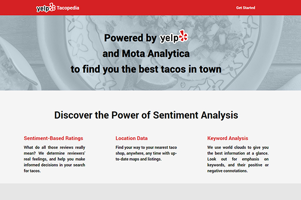
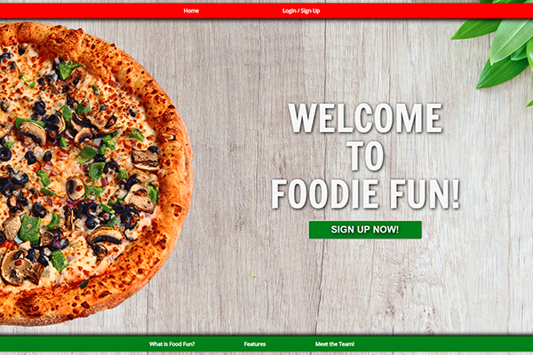
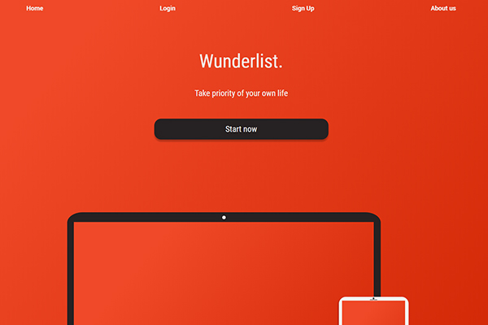
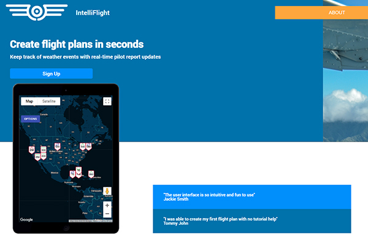

My Work
Check out some of my projects...
Yelp Tacopedia
Yelp Tacopedia uses sentiment analysis to find you the best tacos in town.
 View Project GithubFoodie Fun
Foodie Fun lets you rank and review your favorite restaurants, and meals.
 View Project GithubWunderlist
Wunderlist helps organize your daily tasks, and manage your time.
 View Project GithubIntelliFlight
IntelliFlight lets pilots plan a flight, and view updated PIREPS along their route.
 View Project Github